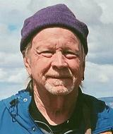

The announcement of Ron's death to Musica Donavania members is here: Ron Cobb - Musica Donavania.
Testimony - Andrew Grygus
Ron Cobb was one of two true founders of the Chesley Donavan Foundation - from which Musica Donavania evolved. Originally it was named "CD Inc." for "Cobb Duke Inc.", but the name was change to "Chesley Donavan Foundation" when other people started joining the group. Meetings were held in Tad Duke's father's welding shop in Burbank. I became a member of CD in 1959 or 1960 while Ron was serving in the Army, but meetings had already been moved to Helen Urban's garage in Burbank. Much more on the beginnings of the Chesley Donavan Foundation can be found on the page History of Musica Donavania.
Ron never returned to CD meetings, and I met him through friends. Now and then, for some years in the mid and late 1960s, I would hang out with various counter-culture personalities in Ron's digs in Hollywood and West Los Angeles. He was becoming notable as a political cartoonist, starting with the Los Angeles Free Press. He also did other freelance design work, but his spectacular film career was still well in the future. I pretty much lost track of Ron when he moved to Australia.
Ron did live in the U.S. temporarily during some film projects, particularly in Topanga Canyon, but I did not see him during this period. All my contacts associated with Ron were gone, especially due to my 30 year exile from CD and the "Music Group" that was forming from it.
Ron was inadvertently responsible for my exile from CD and the Music Group, due to his encouraging me to take up doing art work. This absurd story is detailed on the Banished from CD page. I was still in exile during his trip to the U.S. in 2000 (see photos below)
Testimony - Tom Slover
 Some Reminiscences Of My Friendship With Ron Cobb
Through mutual friends in the Chesley Donavan Foundation, I met Ron Cobb in the early 1960s when he had finished his service in the Army. He was living in a small apartment on Whitley Terrace in Hollywood, just off Cahuenga Blvd. near the Hollywood Bowl. Some of his neighbors there were also artists although it wasn't a commune; each lived alone.
He had already become well known as an editorial/political cartoonist for the Los Angeles Freepress, and keeping with its name, Ron worked at the "Freep" unpaid, so money was tight for him. By invitation I became a regular at frequent informal gatherings at his place. It was then that Ron received an invitation to exhibit his political cartoons at a movie house that showed imported films on Wednesday evenings.
This "Art House" was located on Melrose Ave. and as Ron had no car, it was a bit far for him to walk. So I became his transport so that he could be on hand to talk with movie goers who might be interested in purchasing his art, thus providing some needed income and wider artistic exposure.
Ron moved to a larger house on Cahuenga near Franklin Ave. and later to an apartment on Orange Grove in West Hollywood. Ron was a great conversationalist and raconteur. There were many evenings when we all gathered at his place for hours of intellectual and political discussions with cups of tea and a very occasional glass of beer or wine. When I knew him, he was never much of a drinker and I don't remember him ever using drugs.
Our association ended just before he found fame in the film industry, as our lives naturally began to move in different circles and directions.
I saw Ron again years later for one evening at a Musica Donavania meeting at Bon & Tim Callahan's home in Altadena. Then it was back to Oz for him.
I emailed him one last time in 2018 with some reminiscences of our early associations but received a reply from his wife Robin saying that he remembered those times well but was, sadly, too ill to respond.
Ron and Tad Duke were the beginning of the Chesley Donavan Foundation, which was the wellspring of the Musica Donavania music group, which has been continuously active in Los Angeles for over six decades. Well done Ron Cobb.